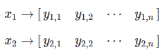
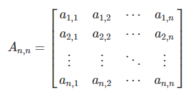
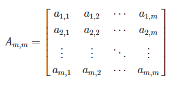
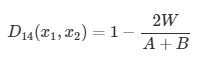
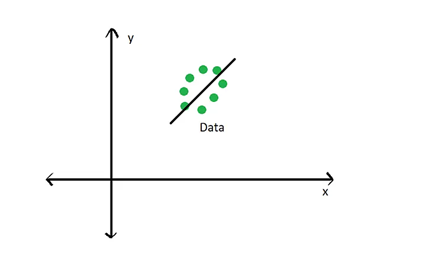

Ordination Lecture
Kierstin Acuna & Martin Genova
2023-11-29
Introduction to Ordination
Outline
- Introduction
- Dissimilarity Measures/Distance Coefficients
- Unconstrained Ordination
- Constrained Ordination
R Script for this lab can be found here.
This lecture is adapted from the Quebec Center for Biodiversity Science, R Workshop Series:
Introduction
So far in this course we have learned several powerful techniques for analyzing data (LM’s, GLM’s, GLMM’s, GAM’s, etc.). All of these methods focus on modeling one response variable as a function of one or more predictor variables. For example, say we want to know how a fish species of interest (Cottus gobio) is impacted by a handful of environmental variables (pH, average stream flow, and dissolved oxygen concentration).
We can do this easily with a gamma-distributed GLM.
# Load libraries ----
library(codep)
library(vegan)
# Load Doubs fish Data ----
data(Doubs)
species <- as.data.frame(Doubs.fish[-8,])
vars <- as.data.frame(cbind(Doubs.env[-8,],Doubs.geo[-8,]))# GLM example ----
# Cottus gobio gamma distributed model
CHA.alt <- species$CHA + 1 #get rid of zeros to prep for log link
COGO_mod <- glm(CHA.alt ~ pH + flo + oxy, data = vars, family = Gamma(link = "log"))
summary(COGO_mod) #oxygen is significantly positive!##
## Call:
## glm(formula = CHA.alt ~ pH + flo + oxy, family = Gamma(link = "log"),
## data = vars)
##
## Coefficients:
## Estimate Std. Error t value Pr(>|t|)
## (Intercept) -7.262388 3.578497 -2.029 0.05319 .
## pH 0.769843 0.453829 1.696 0.10224
## flo 0.005131 0.004821 1.064 0.29728
## oxy 0.137120 0.039997 3.428 0.00211 **
## ---
## Signif. codes: 0 '***' 0.001 '**' 0.01 '*' 0.05 '.' 0.1 ' ' 1
##
## (Dispersion parameter for Gamma family taken to be 0.1701858)
##
## Null deviance: 7.8841 on 28 degrees of freedom
## Residual deviance: 4.0043 on 25 degrees of freedom
## AIC: 51.843
##
## Number of Fisher Scoring iterations: 8It looks like this fish does better when dissolved oxygen concentrations are higher. Cool!
But, what if we were interested in not just one fish, but an entire community of fishies?
This is where multivariate analysis shines! Multivariate analysis is any analysis that allows us to address the simultaneous observation or analysis of more than one response variable. In multivariate analysis, we can ask questions like:
- How does the bacterial composition on maple leaves change along an elevational gradient?
- What is the compositional dissimilarity of bat communities?
- How closely-related are local spider communities in relation to their composition?
- What environmental variables influence the abundance of fishes in the Shark Tale community?
Definition of Ordination
So now that we know what kind of questions multivariate analysis can answer, what is Ordination? In very general terms:
Ordination is a collective term for multivariate techniques which summarize a multidimensional data set in such a way that when it is projected onto a low dimensional space, any intrinsic pattern the data may possess becomes apparent upon visual inspection (Pielou, 1984).
Ordination can also be thought of as the ordering of objects characterized by multiple attributes, hence why it is a type of multivariate analysis. In ecological terms, ordination is often used to summarize complicated community data into a low-dimensional ordination space which places similar species and samples close together while less-similar species and samples are further apart. The dimensions of this low-dimension ordination space often represent environmental or variable gradients, the relative importance of which can be quantified to understand how they structure complicated community data.
Additionally, the results from most ordination techniques can readily be graphed into intuitive interpretations of species-environment relationships.
We can make informative and great looking figures like this:


In other cases, ordination is used as a step in a series of analyses. You can often use ordination to reduce the number of variables to avoid multicollinearity, or reduce the dimensionality of a data set to a limited number of axes, which are then used in regression, classification, or clustering. Some ordination techniques can even be used directly for hypothesis testing.
In order to understand the techniques behind ordination, we first need to have a basic understanding of matrices and matrix algebra
Review of Matrices and Matrix Algebra
Most ecological data can take the form of a matrix, where x is the sampling unit (e.g., site, plot), and y is the ecological descriptor (e.g., species presence-absence, topographical variables, chemical variables).

The same ecological data table can be represented in matrix notation like this:

Association Matrices
Using the data from our matrix Y:
One can examine the relationship between the first two objects, x1 and x2:

We refer to the relationship between x1 and x2 as a1,2.
We can populate the association matrix An,n, with the relationships between all objects from Y.

This is the basis of most ordination methods (Q-mode, where the associations between objects, or sites/plots, are analyzed).
We can also analyze the associations between ecological descriptors (columns, R-mode).

We can populate the association matrix Am,m with the relationships between all descriptors from Y:

Dissimmilarity Measures
Now that we understand what an association matrix is, we need to know how to calculate the associations between sites (rows) or species (columns). How do we fill in our association matrix, A?
We can obtain the association matrix (An,n or Am,m) in the form of pairwise distances or dissimilarities Dm,m (or similarities Sm,m) and then analyze those distances.
The most common way to calculate distance or dissimilarity matrices is by using the function stats::dist().
Types of Distance Coefficients
Euclidean Distance
The most common distance measure is the Euclidean distance, which falls under the category of Metric distance coefficients. It’s used as the default distance metric for principal component analysis (PCA). Euclidean distance is a measure of the distance between two points in Euclidean space, which is typically planar and orthogonal. In two dimensions, the Euclidean distance between two points p and q can be calculated using the Pythagorean theorem:

We can visualize Euclidean Distance below:
Euclidean distance is a commonly used measure in multivariate analyses because it provides a straightforward and intuitive way to measure the distance or similarity between observations in a multidimensional space. However, the problem with Euclidean distance is that while straightforward and intuitive, this distance metric isn’t appropriate for species abundance data because of the double-zero problem.
The double-zero problem appears in species abundance data because while there is only one way to observe a species, there are many ways to not observe a species. A species absence could mean that the environmental conditions in a particular site are not suitable for that species, or it could be that we simply failed to observe the species. Therefore, we want to put more emphasis on presences than absences when comparing sites based on species abundances. The Euclidean distance is not able to put special emphasis on any one type of data.
To show this, we can simulate a species abundance data set where there are three samples in three different moisture sites. Six species that prefer different moisture conditions are sampled for their abundance.
(Y.hmm <- data.frame(hydrophillic_1 = c(1, 0, 0), hydrophillic_2 = c(1, 1, 0),
mesic_1 = c(0, 1, 0), mesic_2 = c(0,4,0),
xeric_1 = c(0, 1, 3),xeric_2 = c(0, 0, 2),
row.names = c("sample_1_wet", "sample_2_intermediate",
"sample_3_dry")))## hydrophillic_1 hydrophillic_2 mesic_1 mesic_2 xeric_1
## sample_1_wet 1 1 0 0 0
## sample_2_intermediate 0 1 1 4 1
## sample_3_dry 0 0 0 0 3
## xeric_2
## sample_1_wet 0
## sample_2_intermediate 0
## sample_3_dry 2We can easily calculate the Euclidean distance using the dist() function, specifying Euclidean distance using method = “Euclidean”.
# Calculate Euclidean distance using the dist() function
(Y.hmm.DistEu <- as.matrix(stats::dist(x = Y.hmm, method = "euclidean")))## sample_1_wet sample_2_intermediate sample_3_dry
## sample_1_wet 0.000000 4.358899 3.872983
## sample_2_intermediate 4.358899 0.000000 5.099020
## sample_3_dry 3.872983 5.099020 0.000000You can also calculate Euclidean distance by hand using the function below:
# Calculate Euclidean Distance by Hand
calc_eu_dist <- function(spe_abun_df) {
# Create output matrix
output <- as.data.frame(matrix(NA, nrow = nrow(spe_abun_df), ncol = nrow(spe_abun_df)))
# Index through the rows of the data frame
for (i in 1:nrow(spe_abun_df)) {
x1 <- spe_abun_df[i, ]
for (t in 1:nrow(spe_abun_df)) {
x2 <- spe_abun_df[t,]
# Calculate euclidean distance and place distance into output data frame
output[i,t] <- sqrt(sum((x1 - x2)^2))
}
}
# Return output
return(output)
}
# Run Euclidean distance by Hand function
(Y.hmm_eu_dist <- calc_eu_dist(Y.hmm))## V1 V2 V3
## 1 0.000000 4.358899 3.872983
## 2 4.358899 0.000000 5.099020
## 3 3.872983 5.099020 0.000000Looking at the Euclidean distance output, lower numbers indicate similarity between sites. The double-zero problem presents itself in that the Euclidean distance between site 1 and site 3 is the lowest, suggesting that they are the most similar sites. However, this is obviously not correct; sites 1 and 3 have no species in common! Because there are multiple reasons why a species might be absent (e.g. sampling error, unsuitable habitat), we want to give more weight to presences in our analyses, and the Euclidean distance is not able to do this.
Therefore, Euclidean distance should not be used to compare sites based on species abundances. This distance is better used when a zero value has a clear and singular meaning, such as a data set that consists of ecological descriptors (i.e., soil nutrients, climate variables, topographical variables). There are other distance metrics that better deal with the double-zero problem.
Bray-Curtis Coefficient
Another distance coefficient that is better suited to analyze species abundances is the Bray-Curtis coefficient. This coefficient falls under the Semimetric category of distance coefficients. The coefficient can be calculated:

Where:
- W is the sum of the lowest abundances in each species found between sites x1 and x2
- A is the sum of all abundances in x1
- B is the sum of all abundances in x2
Using the same data set above, we can calculate the Bray-Curtis coefficient using the vegdist() function in the vegan package:
(Y.hmm.BCdist <- vegan::vegdist(Y.hmm, method = "bray", binary = FALSE))## sample_1_wet sample_2_intermediate
## sample_2_intermediate 0.7777778
## sample_3_dry 1.0000000 0.8333333(Y.hmm.BCdist.matrix <- as.matrix(Y.hmm.BCdist))## sample_1_wet sample_2_intermediate sample_3_dry
## sample_1_wet 0.0000000 0.7777778 1.0000000
## sample_2_intermediate 0.7777778 0.0000000 0.8333333
## sample_3_dry 1.0000000 0.8333333 0.0000000Again, lower numbers indicate higher similarities. In contrast to the Euclidean coefficient, the Bray-Curtis coefficient between site 1 and site 3 indicates that these sites are less similar compared to their relationship with site 2. Therefore, the Bray-Curtis coefficient is better at using species abundances to capture site differences, which helps deal with the double-zero problem.
Below is a function to calculate the Bray-Curtis coefficient by hand:
# Calculate Bray-Curtis coefficient by hand
calc_bc_dist <- function(spe_abun_df) {
# Create output matrix
output <- as.data.frame(matrix(NA, nrow = nrow(spe_abun_df), ncol =
nrow(spe_abun_df)),
row.names = rownames(spe_abun_df))
colnames(output) <- rownames(spe_abun_df)
# Index through the rows of the data frame
for (i in 1:nrow(spe_abun_df)) {
x1 <- spe_abun_df[i, ]
for (t in 1:nrow(spe_abun_df)) {
x2 <- spe_abun_df[t,]
# Create empty data frame to find the minimum values of each species between two sites
comp_df <- as.data.frame(matrix(nrow = 2, ncol = ncol(spe_abun_df)))
# Place the site values into the data frame
comp_df[1,] = x1
comp_df[2,] = x2
# Find the minimum abundance values of each species and sum them.
min_abundances <- apply(comp_df, 2, min)
W <- sum(min_abundances)
# Sum the abundances of site 1
A = sum(x1)
# Sum the abundances of site 2
B = sum(x2)
# Calculate the Bray-Curtis coefficient
bc_dist <- (1 - ((2 * W) / (A + B)))
# Place the BC coefficient into the output data frame
output[i,t] <- bc_dist
}
}
# Return output
return(output)
}
# Run Bray-Curtis coefficient by hand function
calc_bc_dist(Y.hmm)## sample_1_wet sample_2_intermediate sample_3_dry
## sample_1_wet 0.0000000 0.7777778 1.0000000
## sample_2_intermediate 0.7777778 0.0000000 0.8333333
## sample_3_dry 1.0000000 0.8333333 0.0000000Other Distance Coefficients
Besides Euclidean distance, common Metric coefficients include Chord distances and Jaccard’s coefficient. Another common Semimetric coefficient is Sørensen’s coefficient. A final group of distance coefficients are Nonmetric, one of which is Mahalanobis distance. You can find out more about these distance coefficients here. More information about distance coefficients can be found here.
Unconstrained Ordination
Unconstrained ordination methods are multivariate techniques used to visualize and explore relationships among variables or observations in a data set without imposing any specific constraints on the relationships. In contrast, constrained ordination methods combine concepts from ordination and regression to test hypotheses. We’ll focus on unconstrained ordination first.
These methods are called “unconstrained” because they do not require prior knowledge or assumptions about the structure of the data or the relationships among variables.
Unconstrained ordination methods work by representing the variables or observations in a lower-dimensional space, such as a two-dimensional or three-dimensional plot, while preserving the overall structure of the data.
Some common unconstrained ordination methods include principal component analysis (PCA), correspondence analysis (CA), principal coordinates analysis (PCoA), and nonmetric multidimensional scaling (NMDS). These methods can be applied to a wide range of ecological data, including species abundance data, environmental data, and community similarity matrices.
Overall, unconstrained ordination methods are widely used in community ecology to explore patterns and relationships among biological communities and environmental variables. These methods are valuable tools for identifying key factors that influence community composition and structure, and for developing hypotheses about the underlying ecological processes that drive these patterns.
Principal Component Analysis
Principal Component Analysis (PCA) is a statistical technique used to reduce the dimensionality of a data set while retaining most of its variability. It’s more common uses are analyzing environmental gradients.
It is a linear transformation method that converts the original set of variables into a new set of linearly uncorrelated variables, called principal components (PCs), which are sorted in decreasing order of variance. The resulting principal components are orthogonal to each other, meaning that they are not correlated, and their order reflects their importance in explaining the variability of the data.
PCA has become one of the most commonly used techniques in data analysis due to its ability to identify hidden patterns and reduce the complexity of high-dimensional data.
Note: PCA uses Euclidean distances to calculate similarities in data sets.
To become comfortable with PCA, we will follow with detailed examples on how to perform it step-by-step, and then we will use functions from R packages to do it.
Breaking Down a PCA
- Load the data set
data(Doubs)
species <- Doubs.fish[-8,]- Apply a Hellinger transformation on the Species abundance data to standardize the data
spe.hel <- as.data.frame(vegan::decostand(species, method = "hellinger"))
head(spe.hel)## CHA TRU VAI LOC OMB BLA HOT TOX VAN CHE BAR SPI
## 1 0 1.0000000 0.0000000 0.0000000 0 0 0 0 0.0000000 0.0000000 0 0
## 2 0 0.6454972 0.5773503 0.5000000 0 0 0 0 0.0000000 0.0000000 0 0
## 3 0 0.5590170 0.5590170 0.5590170 0 0 0 0 0.0000000 0.0000000 0 0
## 4 0 0.4364358 0.4879500 0.4879500 0 0 0 0 0.0000000 0.2182179 0 0
## 5 0 0.2425356 0.2970443 0.2425356 0 0 0 0 0.3834825 0.2425356 0 0
## 6 0 0.3779645 0.4364358 0.4879500 0 0 0 0 0.2182179 0.3086067 0 0
## GOU BRO PER BOU PSO ROT CAR TAN BCO PCH GRE
## 1 0.0000000 0.0000000 0.0000000 0 0 0.0000000 0 0.0000000 0 0 0
## 2 0.0000000 0.0000000 0.0000000 0 0 0.0000000 0 0.0000000 0 0 0
## 3 0.0000000 0.2500000 0.0000000 0 0 0.0000000 0 0.0000000 0 0 0
## 4 0.2182179 0.3086067 0.3086067 0 0 0.0000000 0 0.2182179 0 0 0
## 5 0.2425356 0.3429972 0.3429972 0 0 0.2425356 0 0.2970443 0 0 0
## 6 0.2182179 0.2182179 0.2182179 0 0 0.0000000 0 0.3086067 0 0 0
## GAR BBO ABL ANG
## 1 0.0000000 0 0 0
## 2 0.0000000 0 0 0
## 3 0.0000000 0 0 0
## 4 0.0000000 0 0 0
## 5 0.3834825 0 0 0
## 6 0.2182179 0 0 0- Compute the Covariance Matrix
Covariance indicates the direction of the linear relationship between two variables. A positive covariance indicates a positive relationship, while a negative relationship indicates that they do not. Zero indicates no relationship. It is unlike correlation in that it doesn’t tell us the strength of the relationship between two variables.
# Compute covarience matrix by hand
comp_cov <- function(data) {
output_df <- as.data.frame(matrix(NA, nrow = ncol(data), ncol = ncol(data)), row.names = colnames(data))
colnames(output_df) <- colnames(data)
for (i in 1:ncol(data)) {
mean.dif.x1 <- data[,i] - mean(data[,i])
for (p in 1:ncol(data)) {
mean.dif.x2 <- data[,p] - mean(data[,p])
output <- mean.dif.x1 * mean.dif.x2
output_df[i, p] <- sum(output)/(nrow(data)-1)
}
}
return(output_df)
}
cov_matrix <- comp_cov(spe.hel)
head(cov_matrix)## CHA TRU VAI LOC OMB BLA
## CHA 0.015977198 0.012026812 0.012513059 0.006580672 0.01515814 0.011006403
## TRU 0.012026812 0.071502839 0.036634254 0.024207447 0.01208775 0.004112141
## VAI 0.012513059 0.036634254 0.047694488 0.037115341 0.01259264 0.005987166
## LOC 0.006580672 0.024207447 0.037115341 0.035824225 0.00539503 0.004201726
## OMB 0.015158137 0.012087752 0.012592643 0.005395030 0.01692324 0.009459560
## BLA 0.011006403 0.004112141 0.005987166 0.004201726 0.00945956 0.015233024
## HOT TOX VAN CHE BAR
## CHA -0.003552038 -0.0001726533 -0.0025721288 -0.001703531 0.0009781263
## TRU -0.015080598 -0.0121822431 -0.0121298620 -0.018639834 -0.0164667541
## VAI -0.011138416 -0.0069676122 -0.0041950405 -0.005536361 -0.0115045445
## LOC -0.008444571 -0.0043488510 -0.0005821315 -0.001568058 -0.0070640093
## OMB -0.002852840 -0.0019856342 -0.0050243374 -0.002521317 0.0001601326
## BLA -0.001189593 0.0042790585 0.0027125669 -0.002968465 0.0055941493
## SPI GOU BRO PER BOU
## CHA -0.001597939 -0.0043746175 -0.005190344 -0.004457198 -0.004197232
## TRU -0.014148932 -0.0217796874 -0.011934198 -0.012057980 -0.017769121
## VAI -0.009183154 -0.0132256980 -0.007433464 -0.006610086 -0.013331390
## LOC -0.006460903 -0.0090866891 -0.004714683 -0.004149936 -0.009475640
## OMB -0.002014055 -0.0050904766 -0.004958398 -0.004709072 -0.003137959
## BLA 0.002014523 0.0007493798 -0.001737545 -0.001094323 -0.001430896
## PSO ROT CAR TAN BCO
## CHA -0.003690993 -0.005377753 -0.0026029520 -0.005371471 -0.004768239
## TRU -0.017943941 -0.015532384 -0.0144657876 -0.017886497 -0.015328407
## VAI -0.014766877 -0.012797337 -0.0113913504 -0.009793982 -0.013056100
## LOC -0.010784686 -0.010715450 -0.0078341254 -0.003381653 -0.009282832
## OMB -0.003885211 -0.004674830 -0.0030288333 -0.006035675 -0.003838716
## BLA -0.000485497 -0.003662199 0.0003230854 -0.001524235 -0.002852859
## PCH GRE GAR BBO ABL
## CHA -0.003344125 -0.006823788 -0.010461808 -0.005830677 -0.009918918
## TRU -0.010505112 -0.024223037 -0.036112397 -0.018926750 -0.037810982
## VAI -0.010425572 -0.021495504 -0.024623952 -0.016548015 -0.033036524
## LOC -0.007849448 -0.017140702 -0.016838912 -0.012460031 -0.028746271
## OMB -0.002447009 -0.005731230 -0.010486285 -0.004876977 -0.008721792
## BLA -0.002300108 -0.004617724 -0.005659957 -0.003844449 -0.006362586
## ANG
## CHA -0.003844053
## TRU -0.015829144
## VAI -0.012487334
## LOC -0.008900009
## OMB -0.002897739
## BLA -0.001543258 # Compare with built-in function
cov_base_func <- cov(spe.hel)
head(cov_base_func)## CHA TRU VAI LOC OMB BLA
## CHA 0.015977198 0.012026812 0.012513059 0.006580672 0.01515814 0.011006403
## TRU 0.012026812 0.071502839 0.036634254 0.024207447 0.01208775 0.004112141
## VAI 0.012513059 0.036634254 0.047694488 0.037115341 0.01259264 0.005987166
## LOC 0.006580672 0.024207447 0.037115341 0.035824225 0.00539503 0.004201726
## OMB 0.015158137 0.012087752 0.012592643 0.005395030 0.01692324 0.009459560
## BLA 0.011006403 0.004112141 0.005987166 0.004201726 0.00945956 0.015233024
## HOT TOX VAN CHE BAR
## CHA -0.003552038 -0.0001726533 -0.0025721288 -0.001703531 0.0009781263
## TRU -0.015080598 -0.0121822431 -0.0121298620 -0.018639834 -0.0164667541
## VAI -0.011138416 -0.0069676122 -0.0041950405 -0.005536361 -0.0115045445
## LOC -0.008444571 -0.0043488510 -0.0005821315 -0.001568058 -0.0070640093
## OMB -0.002852840 -0.0019856342 -0.0050243374 -0.002521317 0.0001601326
## BLA -0.001189593 0.0042790585 0.0027125669 -0.002968465 0.0055941493
## SPI GOU BRO PER BOU
## CHA -0.001597939 -0.0043746175 -0.005190344 -0.004457198 -0.004197232
## TRU -0.014148932 -0.0217796874 -0.011934198 -0.012057980 -0.017769121
## VAI -0.009183154 -0.0132256980 -0.007433464 -0.006610086 -0.013331390
## LOC -0.006460903 -0.0090866891 -0.004714683 -0.004149936 -0.009475640
## OMB -0.002014055 -0.0050904766 -0.004958398 -0.004709072 -0.003137959
## BLA 0.002014523 0.0007493798 -0.001737545 -0.001094323 -0.001430896
## PSO ROT CAR TAN BCO
## CHA -0.003690993 -0.005377753 -0.0026029520 -0.005371471 -0.004768239
## TRU -0.017943941 -0.015532384 -0.0144657876 -0.017886497 -0.015328407
## VAI -0.014766877 -0.012797337 -0.0113913504 -0.009793982 -0.013056100
## LOC -0.010784686 -0.010715450 -0.0078341254 -0.003381653 -0.009282832
## OMB -0.003885211 -0.004674830 -0.0030288333 -0.006035675 -0.003838716
## BLA -0.000485497 -0.003662199 0.0003230854 -0.001524235 -0.002852859
## PCH GRE GAR BBO ABL
## CHA -0.003344125 -0.006823788 -0.010461808 -0.005830677 -0.009918918
## TRU -0.010505112 -0.024223037 -0.036112397 -0.018926750 -0.037810982
## VAI -0.010425572 -0.021495504 -0.024623952 -0.016548015 -0.033036524
## LOC -0.007849448 -0.017140702 -0.016838912 -0.012460031 -0.028746271
## OMB -0.002447009 -0.005731230 -0.010486285 -0.004876977 -0.008721792
## BLA -0.002300108 -0.004617724 -0.005659957 -0.003844449 -0.006362586
## ANG
## CHA -0.003844053
## TRU -0.015829144
## VAI -0.012487334
## LOC -0.008900009
## OMB -0.002897739
## BLA -0.001543258- Perform the Eigen-decomposition of the covariance matrix
Eigendecomposition is a fancy way of saying to calculate the eigenvectors and eigenvalues of a matrix. The eigenvectors represent the directions in covariance space that capture the maximum amount in the data, and the eigenvalues indicate the amount of variance captured by each eigenvector.
Visually, you think of an eigenvector below:

Where the black line running through the data represents the eigenvector that captures the most amount of variance in the data. For a PCA, this eigenvector represents the first principal component. The second principal component would be orthogonal to this eigenvector, as seen below:

Calculating eigenvectors and eigenvalues involves several involved linear algebra and matrix multiplication steps, which we won’t go into detail here. For this lecture, it’s important to understand what eigenvectors and eigenvalues are and how they relate to our data. If you want to understand those steps, a brief introduction can be found here and a good youtube tutorial can be found here.
You can easily compute the eigenvalues and eigenvectors using the eigen() function:
eigen_decomp <- eigen(cov_matrix)
# Extract Eigenvalues
(eig_values <- eigen_decomp$values)## [1] 2.579605e-01 6.424089e-02 4.632294e-02 3.850244e-02 2.196526e-02
## [6] 1.675463e-02 1.472430e-02 1.155759e-02 6.936149e-03 6.019271e-03
## [11] 4.412388e-03 2.982309e-03 2.713021e-03 1.834874e-03 1.454670e-03
## [16] 1.117858e-03 8.308832e-04 5.415301e-04 4.755244e-04 3.680458e-04
## [21] 2.765106e-04 2.252760e-04 1.429425e-04 7.618319e-05 4.989831e-05
## [26] 1.525627e-05 9.117507e-06Again, eigenvalues tell us the relative amount of variance explained by each eigenvector. The higher the eigenvalue, the more variance explained by that eigenvector.
# Extract Eigenvectors
eig_vectors <- -eigen_decomp$vectors
rownames(eig_vectors) = colnames(spe.hel)
# Extract the first two eigenvectors
eig_vec_1 <- eig_vectors[,1]
eig_vec_2 <- eig_vectors[,2]- Show amount of variance contributed by each eigenvector/principal components by making a Scree Plot.
# Calculate the estimated variance for each eigenvalue
(e_var <- eig_values / (nrow(spe.hel) - 1))## [1] 9.212875e-03 2.294317e-03 1.654391e-03 1.375087e-03 7.844736e-04
## [6] 5.983796e-04 5.258679e-04 4.127712e-04 2.477196e-04 2.149740e-04
## [11] 1.575853e-04 1.065110e-04 9.689361e-05 6.553120e-05 5.195251e-05
## [16] 3.992351e-05 2.967440e-05 1.934036e-05 1.698301e-05 1.314449e-05
## [21] 9.875379e-06 8.045571e-06 5.105091e-06 2.720828e-06 1.782082e-06
## [26] 5.448669e-07 3.256252e-07 # Data frame with variance percentages
var_per <- data.frame(
PC = c("PC01", "PC02", "PC03", "PC04", "PC05", "PC06","PC07", "PC08", "PC09",
"PC10", "PC11", "PC12", "PC13", "PC14", "PC15", "PC16", "PC17", "PC18",
"PC19", "PC20", "PC21", "PC22", "PC23", "PC24", "PC25", "PC26", "PC27"),
PER = c(e_var) * 100 / sum(e_var) # Calculate the percentage
)
# Scree plot to show amount of variance accounted by each principal components
barplot(PER ~ PC, data = var_per,
xlab = "Principal Components",
ylab = "Percent of Variation %")- Selecting Principal Components
It is generally a good idea to select the principal components that explain most of the variance in the data. Generally, selecting principal components is a subjective process. There is no objectively correct method for choosing principal components. However, there are established methods used by community ecologists.
The most common method is the Kaiser-Guttman Criterion, which states that any eigenvector with an eigenvalue greater than the mean eigenvalue should be retained.
eig_val_PC <- data.frame(
PC = c("PC01", "PC02", "PC03", "PC04", "PC05", "PC06","PC07", "PC08", "PC09",
"PC10", "PC11", "PC12", "PC13", "PC14", "PC15", "PC16", "PC17", "PC18",
"PC19", "PC20", "PC21", "PC22", "PC23", "PC24", "PC25", "PC26", "PC27"), EV = eig_values)
barplot(EV ~ PC, data = eig_val_PC,
xlab = "Principal Components",
ylab = "Eigenvalues")
abline(h = mean(eig_values), col = "red")The Kaiser-Guttman Criterion in this example suggests that we should use the first 5 principal components. We can calculate how much variation is captured by these first 5:
eig_vec_kgc <- eig_values[eig_values > mean(eig_values)]
sum(var_per$PER[1:length(eig_vec_kgc)])## [1] 85.3698Another common method for choosing principal components is the Broken Stick Model. It provides “a good combination of simplicity of calculation and accurate evaluation of dimensionality relative to the other statistical approaches” (Jackson 1993). The methods works by keeping “[principal] components that explain more variance than would be expected by randomly dividing the variance into p parts”. The “expected proportions” would correspond to a null model that contains uncorrelated variables (random noise). If you plot the principal component proportions against the broken-stick proportions, the principal component proportions that are higher than the broken stick proportions indicate which principal components to keep. This methods falls on conservative side of Principal Component selections.
broken_stick <- function(eig_values) {
# Calculate Broken Stick Model
n = length(eig_values)
bsm = data.frame(j=seq(1:n), prop_var=0)
bsm$prop_var[1] = 1/n
for (i in 2:n) {
bsm$prop_var[i] = bsm$prop_var[i-1] + (1/(n + 1 - i))
}
bsm$prop_var = 100*bsm$prop_var/n
# Plot Broken Stick Model Over
barplot(t(cbind(100*eig_values/sum(eig_values), bsm$p[n:1])),
beside=TRUE,
main="Broken Stick Model",
col=c("red","blue"),
las=2,
xlab = "Principal Components", ylab = "Percent of Variation (%)")
legend("topright", c("Observed Principal Components", "Broken stick model"),
pch=15,
col=c("red","blue"),
bty="n")
}
broken_stick(eig_values)While these methods are common in selecting principal components, sometimes selection involves contextualizing your research questions. You may want to select the principal components that explain the variance associated with the variables and/or species important to your research.
For example, say you are interested in how sites are grouped based on a rare species. While PC 1 will likely capture the most variance in your data out of all the PC’s, it may not capture the variance attributable to the rare species of interest. Instead, PC 30 might capture the variance caused by your rare species, and so you may want to select PC 30 for further analysis, even though PC 30 probably captures a small amount of variance from the data relative to the other PC’s.
- Plot the Principal Components over the data
Now, to better understand how principal components relate to our data, we’ll plot the first two principal components over the relationship between two species of our fish data set, and then show how they relate to each data point.
# Plot only the first principal component
plot(BAR ~ BLA, col = as.factor(rownames(spe.hel)), pch = 19,
xlim = c(-0.25,0.5), ylim = c(-0.5,0.5),
data = (spe.hel), xlab = "BLA (Standardized)", ylab = "BAR (Standardized)")
abline(v=0 , h=0, col = "dark gray")
# Overlap first eigenvector/principal component
abline(0, eig_vec_1[11]/eig_vec_1[6], col='purple')
# Plot lines from the first eigenvector to points
line1 <- c(0, eig_vec_1[11]/eig_vec_1[6])
perp.segment.coord <- function(x0, y0, line1){
a <- line1[1] #intercept
b <- line1[2] #slope
x1 <- (x0 + b * y0 - a * b)/(1 + b^2)
y1 <- a + b * x1
list(x0 = x0, y0 = y0,
x1 = x1, y1 = y1)
}
ss <- perp.segment.coord(spe.hel[,6], spe.hel[,11], line1)
segments(x0 = ss$x0, x1 = ss$x1, y0 = ss$y0, y1 = ss$y1, col = 'purple')
with(spe.hel, text(BAR ~ BLA, labels = as.factor(rownames(spe.hel)), pos = 1, cex=1))
title(main = "First Principal Component over the Standardized Data",
sub = "Purple Lines Horizontal to the First Principal Components is the Variance", cex.sub = 0.75)Now we’ll plot the second principal component and associated variance lines.
# Plot both the first and second principal component
plot(BAR ~ BLA, col = as.factor(rownames(spe.hel)), pch = 19,
xlim = c(-0.25,0.5), ylim = c(-0.5,0.5),
data = (spe.hel), xlab = "BLA (Standardized)", ylab = "BAR (Standardized)")
abline(v=0 , h=0, col = "dark gray")
#Overlap pertinent eigenvectors
abline(0, eig_vec_1[11]/eig_vec_1[6], col='purple')
abline(0, eig_vec_2[11]/eig_vec_2[6], col='orange')
# Plot the lines from second eigenvector to points
line2 <- c(0, eig_vec_2[11]/eig_vec_2[6])
ss <- perp.segment.coord(spe.hel[,6], spe.hel[,11], line2)
segments(x0 = ss$x0, x1 = ss$x1, y0 = ss$y0, y1 = ss$y1,col = 'orange')
with(spe.hel, text(BAR ~ BLA, labels = as.factor(rownames(spe.hel)),pos = 1, cex=1))
title(main = "First (Purple) and Second (Orange) Principal Component over the Standardized Data", cex.main = 0.8, sub = "Lines Horizontal to the Principal Components are the Variance", cex.sub = 0.75)- Loading Scores
Elements of each eigenvector are called loadings and can be interpreted as the contribution of each variable in the data set to the corresponding principal component.
You can make a table with these values and see the contributions of each variable to each principal component:
# Get variable loading scores
variable.loads <- data.frame(
PC01 = eig_vec_1, # First eigenvector
PC02 = eig_vec_2 # Second eigenvector
)
head(variable.loads)## PC01 PC02
## CHA 0.12492725 0.11979088
## TRU 0.46740781 0.01678206
## VAI 0.37336215 0.21333150
## LOC 0.27821421 0.23994030
## OMB 0.12173642 0.09059800
## BLA 0.05610722 0.21147318You can also calculate the loading scores for each site, which shows how they are placed in relation to the principal components.
# Get site loading scores
loading.scores <- as.data.frame(as.matrix(spe.hel) %*% eig_vectors)
colnames(loading.scores) = c("PC01", "PC02", "PC03", "PC04", "PC05", "PC06","PC07", "PC08", "PC09", "PC10", "PC11", "PC12", "PC13", "PC14", "PC15", "PC16", "PC17", "PC18", "PC19", "PC20", "PC21", "PC22", "PC23", "PC24", "PC25", "PC26", "PC27")
head(loading.scores)## PC01 PC02 PC03 PC04 PC05 PC06
## 1 0.46740781 0.01678206 0.44554311 0.2995736 -0.18418835 -0.250578050
## 2 0.65637829 0.25396992 -0.08132083 0.1930861 0.18087321 0.077546456
## 3 0.59827405 0.30899284 -0.15622027 0.2271707 0.14843562 0.148674219
## 4 0.37156935 0.39809661 -0.35185558 0.2453830 0.02439291 0.118346704
## 5 -0.04549983 0.34616888 -0.51663170 0.2332694 -0.29280217 -0.006905958
## 6 0.25289763 0.35111383 -0.51852373 0.1864904 -0.03335129 0.016107628
## PC07 PC08 PC09 PC10 PC11 PC12
## 1 -0.04342150 -0.04524224 0.01657237 0.23355288 -0.006090464 0.17677071
## 2 -0.21031624 0.11714818 0.01660257 0.10727170 -0.027967415 0.13521145
## 3 -0.16202114 0.22857440 -0.02996580 0.06851198 0.072641535 0.09571148
## 4 0.02729467 0.26143962 -0.04281247 0.35606530 0.131187789 0.08917735
## 5 0.15414660 0.17739343 0.11816042 0.17004169 -0.131437865 0.11082261
## 6 0.02831875 0.10250873 -0.00120883 0.28837258 0.012732205 0.15397786
## PC13 PC14 PC15 PC16 PC17 PC18 PC19
## 1 0.01500439 0.2138553 -0.01505748 -0.11758248 0.09465519 0.3039813 0.1128653
## 2 -0.05907003 0.2169063 -0.04680173 -0.08864607 0.13393075 0.2915592 0.1683029
## 3 0.02357556 0.2914421 -0.05439510 -0.14299159 0.12078605 0.2707471 0.1045744
## 4 -0.04907897 0.1718211 -0.03215957 -0.07473939 0.08130227 0.2774793 0.1325279
## 5 -0.07613760 0.2894089 -0.05241113 -0.15503890 0.09463897 0.2639168 0.1246757
## 6 -0.07431159 0.2807281 -0.04763128 -0.08417631 0.12608916 0.3576296 0.1093555
## PC20 PC21 PC22 PC23 PC24 PC25
## 1 -0.2996430 0.1541966 -0.04625322 0.006708405 -0.09885408 0.07860829
## 2 -0.2921570 0.1894920 -0.05811935 0.041299537 -0.09334363 0.07602990
## 3 -0.2841215 0.1421904 -0.03259414 0.008415868 -0.10485889 0.08296853
## 4 -0.3231838 0.1423598 -0.04756516 0.010783782 -0.09642054 0.07252491
## 5 -0.2916004 0.1658857 -0.05877701 0.013714280 -0.09685441 0.08201270
## 6 -0.3084274 0.1576472 -0.03594170 0.019034006 -0.10136775 0.08791374
## PC26 PC27
## 1 0.004346981 0.02025324
## 2 0.007219314 0.02215389
## 3 -0.001764418 0.01514231
## 4 0.003151888 0.02420509
## 5 0.002091927 0.02315005
## 6 0.010782172 0.01440252- Make a biplot of the Principal Components and Loading Scores
# Set plot parameters
par(mar = c(5, 5, 10, 5),
mgp = c(2, 1, 0))
# Plot site loading scores
plot(loading.scores[,2] ~ loading.scores[,1],
xlab = 'PC1', ylab = "PC2",
xlim = c(-1,1), ylim = c(-1,1),col = as.factor(rownames(loading.scores)), pch = 19)
abline(v = 0, col = "orange")
abline(h = 0, col = "purple")
with(loading.scores, text(PC02 ~ PC01, labels = as.factor(rownames(loading.scores)),pos = 1, cex=1))
par(new=TRUE)
# Overlay the variable loading scores
plot(PC02 ~ PC01,
xlim = c(-1, 1), ylim = c(-1,1),
col = "red", pch = 8, axes = F, xlab = "", ylab = "",
data = variable.loads)
axis(4, ylim = c(-1,1), col = "red")
axis(3, xlim = c(-0.9,1), col = "red")
mtext("Loading Scores",side=3,col="red",line=2.5)
mtext("Loading Scores",side=4,col="red",line=2.5)
for (i in 1:nrow(variable.loads)) {
arrows(x0 = 0, y0 = 0, x1 = variable.loads[i,1],y1 = variable.loads[i,2],
col = "red", lwd = 1, length = 0.1)
}
with(variable.loads, text(PC02 ~ PC01, labels = as.factor(rownames(variable.loads)),pos = 1, cex=1,
col = "red"))
title(main = "Biplot of Site and Variable Loading Scores against the First and Second Principal Components",
cex.main = 0.9)PCA using built-in functions
PCA analysis using the prcomp() function
# Using stats: prcomp()
PCA_prcomp <- stats::prcomp(spe.hel)
biplot(PCA_prcomp, xlim = c(-0.5,0.5), ylim = c(-0.5,0.5))
abline(v= 0, h = 0)PCA analysis using the princomp() function
# Using stats: princomp()
PCA_princomp <- stats::princomp(spe.hel)
biplot(PCA_princomp, xlim = c(-0.5,0.5), ylim = c(-0.5,0.5))
abline(v= 0, h = 0) # Using vegan::rda()
PCA_rda <- vegan::rda(spe.hel)
biplot(PCA_rda)
We can analyze these plots by remembering that our Principal components are linear combinations through our variables. The first principal component (PC1) is most correlated with the species variables that are horizontal, as they are all along the same axis. As we move negatively along PC1, we increase in species which have arrows that face to the left, while simultaneously decreasing in abundance with species which have arrows that face to the right Therefore, since Euclidean distance is preserved, PC1 is summarizing these variables and can further be used as explanatory variables in other analyses. An important thing to remember is that principal components are latent variables and that when interpreting them, you have to know how they are related to the original variables.
The second principal component (PC2) is orthogonal of PC1 and can be interpreted independently of PC1. You can therefore make other species inferences by moving along PC2.
Scaling
One last note is that the biplot function has a scaling argument that allows us to change our visualization of the data to allow for different inferences. There is no single way to optimally show objects and variables in a biplot
Type 2 scaling, which is the default, does not preserve approximation of Euclidean distance among sites. This scaling preserves the correlation between variables by their angles relative to each other. This is the best option if the goal is to focus on the relationships between descriptors.
biplot(PCA_rda, scaling = 2)Type 1 scaling attempts to preserve Euclidean distance among sites, while the angles between variables are not meaningful. This option is best if the goal is to interpret relationships among objects.
biplot(PCA_rda, scaling = 1)
Using Principal Components in Further Analyses Example
One example of using principal components in further analyses comes from a study done on fish communities in stream fragments in the Great Plains (Perkins et al. 2015). In this study, the longitudinal length of the stream fragments (length), the average amount of flow (discharge), and number of days without flow (dry) were measured. The first principal component (PC1) represents a gradient from large rivers with high discharge (negative PC1 values), to short rivers with low discharge and may days without flow (positive PC1 values). Community attributes are consequently regressed against PC1.
Correspondence Analysis
Like PCA, Correspondence Analysis (CA) is another technique to reduce the dimensionality of a data set. However, the difference is the use of Chi2 distances instead of the Euclidean distances as used in PCA. This feature is better for species abundance data sets where the species distribution is unimodal or where there are lots of zeros. Using a PCA with a unimodal species distribution can lead to a phenomenon called a “horseshoe” effect”, which can occur with long ecological gradients.
More information about the “horseshoe effect” can be found here.
When conducting a CA, the only difference to a PCA is that the raw data are first transformed into a matrix of cell-by-cell contributions to the Pearson Chi2 statistic. Then an eigendecomposition is placed on the resulting matrix, just as in PCA.
We’ll run a quick CA using the same fish data set.
# Run the CA using the cca() function in the vegan package
# Load data
data(Doubs)
species <- Doubs.fish[-8,]
# Run CA using the vegan package
spe.ca <- vegan::cca(species)
# Identify the eigenvectors using the Kaiser-Guttman Criterion
eig_vec_ca <- spe.ca$CA$eig
(ev_kgc <- eig_vec_ca[eig_vec_ca > mean(eig_vec_ca)])## CA1 CA2 CA3 CA4 CA5
## 0.60099264 0.14437089 0.10729384 0.08337321 0.05157826 # Scree Plot
barplot(eig_vec_ca)
abline(h = mean(eig_vec_ca), col = "red")Now lets make a biplot of the CA.
# Scaling Type 1
plot(spe.ca, scaling = 1, type = "none",
xlab = c("CA1"), ylab = c("CA2"),
main = "Correspondence Analysis Biplot with Scaling Type 1")
# Extract Site and Species Scores
ca.site.scores <- vegan::scores(spe.ca, display = "sites", choices = c(1, 2), scaling = 1)
# Plot site scores
points(ca.site.scores,
pch = 21, col = "black", bg = "steelblue", cex = 1.2)
text(ca.site.scores,
labels = as.factor(rownames(vegan::scores(spe.ca, display = "sites", choices = c(1, 2), scaling = 1))),pos = 1, cex=1,
col = "black")
# Plot species scores
text(vegan::scores(spe.ca, display = "species", choices = c(1), scaling = 1),
vegan::scores(spe.ca, display = "species", choices = c(2), scaling = 1),
labels = rownames(scores(spe.ca, display = "species", scaling = 2)),
col = "red", cex = 0.8)# Scaling Type 2
plot(spe.ca, scaling = 2, type = "none",
xlab = c("CA1"), ylab = c("CA2"),
main = "Correspondence Analysis Biplot with Scaling Type 2")
# Extract site and species scores
ca.site.scores <- vegan::scores(spe.ca, display = "sites", choices = c(1, 2), scaling = 2)
# Plot site scores
points(ca.site.scores,
pch = 21, col = "black", bg = "steelblue", cex = 1.2)
text(ca.site.scores,
labels = as.factor(rownames(vegan::scores(spe.ca, display = "sites", choices = c(1, 2), scaling = 2))),pos = 1, cex=1,
col = "black")
# Plot species scores
text(vegan::scores(spe.ca, display = "species", choices = c(1), scaling = 2),
vegan::scores(spe.ca, display = "species", choices = c(2), scaling = 2),
labels = rownames(scores(spe.ca, display = "species", scaling = 2)),
col = "red", cex = 0.8)
With type 1 scaling of a CA biplot, sites that are close to one another are likely to be relatively similar in their species relative frequencies. Additionally, any site found near the point representing a species is likely to contain a high contribution of that species.
With type 2 scaling of a CA biplot, species that are close to one another are likely to have relatively similar frequencies along the sites. Additionally, any species that lies close to an site is likely to be found in that site or have a higher frequency in that site compared to sites further away.
Principal Coordinate Analysis
Principal Coordinate Analysis (PCoA) builds upon PCA and CA by allowing the use of other distance metrics beyond Euclidean and Chi2. PCoA is best used when trying to visualize distance between objects or when data sets have more columns than rows. If you use Euclidean distances in a PCoA, its identical to a PCA. If you use Chi2 distances, its identical to a CA.
We’ll run a PCoA on the Doubs fish data set below:
# Use the pcoa() function in the ape package to run a PCoA using Euclidean distance.
spe.h.pcoa <- ape::pcoa(dist(spe.hel, method = "euclidean")) # Calculating the Euclidean distances of the hellinger transformed species data set.
# Plot PCoA biplot
ape::biplot.pcoa(spe.h.pcoa, spe.hel, dir.axis1 = -1)
abline(v = 0, h = 0) # Run a PcoA with Bray-Curtis distance
# Calculate Bray-Curtis coefficients
spe.bc <- vegan::vegdist(species, method = "bray") # Calculating the Bray-Curtis distances
# Run PCoA
spe.bc.pcoa <- ape::pcoa(spe.bc)
# Plot PCoA biplot
ape::biplot.pcoa(spe.bc.pcoa, spe.hel, dir.axis1 = -1, dir.axis2 = -1)
abline(v = 0, h = 0)As you can see, the PCoA that uses Euclidean distance is very similar to the PCA run on the same data. The biplot of the PCoA using the Bray-Curtis distance shows that the site positions are slightly different. Since we are working with a data set that contains lots of zeros, this biplot may be more reliable in allowing us to interpret the relationship of these sites among each other (since the scaling is set to type 1).
Nonmetric MultiDimensional Scaling
In PCA, CA and PCoA, a goal is to organize (ordinate) objects using using descriptors in full dimensional space. These descriptors are represented by axes which show the variation in descriptors among sites and preserves the distance among those sites. However, when creating a biplot to describe the space, a good portion of the variation can be lost by only showing two axes, while a portion of the variation is described by all the other axes.
With NMDS, the relationship among objects is the priority over showing the distances between objects. Additionally, almost all of the variation among sites can be visualized with less than three axes. Therefore, the biplot produced by an NMDS is a better two dimensional representation of similarity between objects than PCA, CA, and PCoA.
Lets run an NMDS on the fish data:
# Load Data
data(Doubs)
species <- Doubs.fish[-8,]
# Apply Helligner transformation
spe.h <- vegan::decostand(species, method = "hellinger")
# Run the NMDS
spe.nmds <- vegan::metaMDS(spe.h,
distance = "bray", # specify the distance coefficient to be calculated in the function
k = 2, # specify the number of dimensions
autotransform = F # indicates that transformation has already been applied to the data
)## Run 0 stress 0.06746136
## Run 1 stress 0.1212474
## Run 2 stress 0.07528558
## Run 3 stress 0.0957706
## Run 4 stress 0.07528548
## Run 5 stress 0.06745206
## ... New best solution
## ... Procrustes: rmse 0.000803016 max resid 0.003784747
## ... Similar to previous best
## Run 6 stress 0.1153488
## Run 7 stress 0.07528546
## Run 8 stress 0.1024779
## Run 9 stress 0.06744476
## ... New best solution
## ... Procrustes: rmse 0.0008659577 max resid 0.00409548
## ... Similar to previous best
## Run 10 stress 0.07528544
## Run 11 stress 0.1066087
## Run 12 stress 0.06746442
## ... Procrustes: rmse 0.002617066 max resid 0.01241861
## Run 13 stress 0.09577023
## Run 14 stress 0.1057719
## Run 15 stress 0.06742583
## ... New best solution
## ... Procrustes: rmse 0.003715172 max resid 0.01761232
## Run 16 stress 0.07528547
## Run 17 stress 0.1059219
## Run 18 stress 0.07528543
## Run 19 stress 0.08323599
## Run 20 stress 0.1016353
## *** Best solution was not repeated -- monoMDS stopping criteria:
## 3: no. of iterations >= maxit
## 17: stress ratio > sratmaxWhen we run an NMDS, objects are first positioned in a random starting condition in the requested number of dimensions (default is 2). It then iteratively moves those objects and then calculates the Euclidean distances between all the objects in that configuration. It then does a pairwise comparison of those distances with the Euclidean distances in complete multidimensional space. That pairwise comparison is calculated as the Stress score, which can be interpreted as a goodness-of-fit of the distance adjustment in the reduced-space configuration. The lower the stress, the better the representation of objects in ordination space. NMDS continues to move objects in the requested number of dimensions until the stress score doesn’t improve. That final configuration is the product of an NMDS.
Stress scores lower than <0.2 are generally interpreted as there being a good visual representation of complete multidimensional space in the specified number of NMDS dimensions. <0.1 is great, and <0.05 is excellent, except that is rare.
# Stress score
spe.nmds$stress # A stress score <0.1. Great!## [1] 0.06742583We can do a visual check of goodness-of-fit using a Shepard’s plot.
# Shepard Plot
vegan::stressplot(spe.nmds, main = "Shepard plot")Each of the points represent pairwise comparisons of the objects. The high correlation we see here indicates that the pairwise comparisons between multidimensional space (Observed Dissimilarity) and the configuration of objects in two dimensions (Ordination Distance) are correlated (higher ordination distance = higher observed distance). Therefore, the NMDS in two dimensions is a good fit.
Now lets make a biplot.
# NMDS Biplot
vegan::ordiplot(spe.nmds, type = "t", xlim = c(-2,2),
ylim = c(-1.5, 1.5), main = "NMDS with Doubs Fish Species Community Abundance Data", sub = "Hellinger Transformed data with Bray-Curtis Coefficients")
abline(v = 0, h = 0)With an NMDS plot, we can say that sites close together have small Bray-Curtis distances, and therefore share species presences and also abundances. We can also see which fish species are contributing to those similarities. Unlike a PCA, the axes cannot be used as a latent variable in further analysis, as the position of the data points along the axes are actually orders of points relative to each other.
Constrained Ordination
In contrast to Unconstrained ordination, Constrained Ordination requires prior knowledge or assumptions about the structure of the data or the relationships among variables. Generally, the goal is to identify relationships between a multivariate response table (species composition) and a multivariate explanatory table (environmental gradients) by combining ordination and regression. Like Unconstrained Ordination, axes that describe the variance in a data set are produced, but these axes are constrained by environmental variables. The constrained ordination axes correspond to the directions of the variability in species composition which is explained by these environmental variables.
Unlike Unconstrained Ordination, Constrained Ordination can be used to test hypotheses about the relationship between the environmental variables and species composition. It can partition the variance of species composition into the fraction explained by environmental variables (associated with constrained ordination axes), and not explained by environmental variables (unconstrained ordiation axes).
There are three ways you can work with environmental variables in the context of Constrained Ordination. The first is Forward Selection, which is the selection of environmental variables relevant to species composition. The second is the Monte Carlo permutation test, which aims to test the significance of the variance explained by chosen environmental factors. And finally variance partitioning, which is partitioning the variance by individual environmental variables or combinations of environmental variables.
The two most common Constrained Ordination techniques are Redundancy Analysis (RDA) and Constrained Correspondence Analysis (CCA). RDA can be thought of as the constrained form of PCA, while CCA is the constrained form of Correspondence Analysis.
We won’t go into Canonical Correspondence Analysis in this lecture but more information can be found here.
Redundancy Analysis
The Redundancy Analysis models the effect of an explanatory matrix on a response matrix. This is an important distinction from the models we’ve made so far, which have only had one response variable.
Like PCA, explanatory variables can be quantitative, qualitative, and/or binary.
How RDA Works
- The first step involves multiple regression, where each object in the response matrix, Y, is regressed on the explanatory variables in X, which produces a matrix of fitted values, Yfit.

- Then, we run a PCA on the matrix of fitted values Yfit. Just like before, PCA produces eigenvalues and eigenvectors, but in RDA we call these canonical axes. These axes are stored in a matrix Z, which correspond to the linear combinations of the explanatory variables in X. In analyzing community composition, these canonical axes are interpreted as complex environmental gradients.
For the lab, we’ll conduct a Redundancy Analysis on the Doubs fish data set.
Citations/Sources
More Information About Ordination
- INTRODUCTION TO ORDINATION
- Ordination Methods - an overview
- Borcard, Daniel., Gillet, Francois., & Legendre, Pierre. (2011). Numerical Ecology with R (1st ed. 2011.). Springer New York. https://doi.org/10.1007/978-1-4419-7976-6
Principal Components
- Perkin, J. S., Gido, K. B., Cooper, A. R., Turner, T. F., Osborne, M. J., Johnson, E. R., & Mayes, K. B. (2015). Fragmentation and dewatering transform Great Plains stream fish communities. Ecological Monographs, 85(1), 73–92. https://doi.org/10.1890/14-0121.1
Principal Component Selection
Principal Coordinate Analysis
NMDS